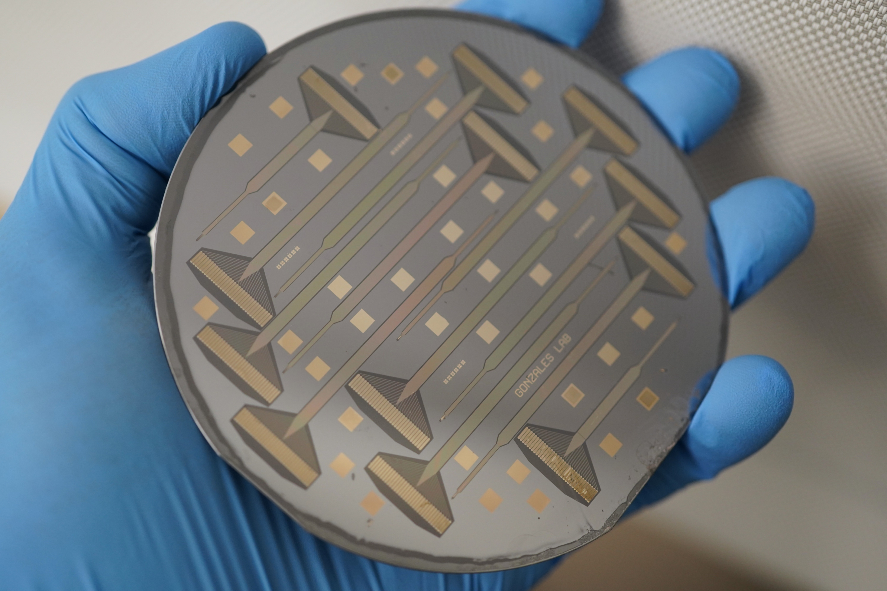
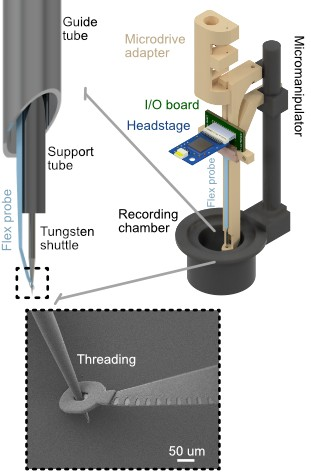
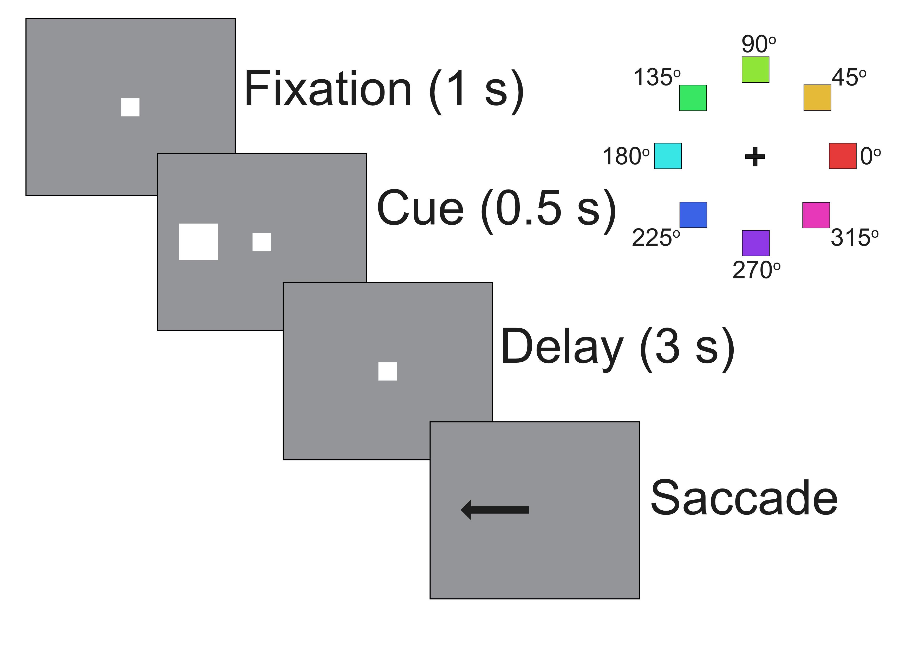

Flexible Electronic Fabrication
I design and fabricate ultrathin, flexible neural interfaces that minimize tissue damage and enable stable, long-term recordings. These devices are optimized for chronic electrophysiology and optogenetics.

Novel Insertion Methodology
I develop methods for precise and reliable implantation of flexible probes, addressing key challenges in targeting accuracy and device stability during insertion.

Behaving Nonhuman Primate Recordings
I use these tools to perform high-density electrophysiology in behaving nonhuman primates, enabling the study of neural activity during complex, naturalistic behavior and physiological regulation.